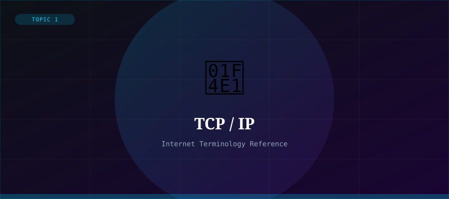

What is TCP/IP?
TCP/IP stands for Transmission Control Protocol/Internet Protocol. It is the suite of communication protocols used to interconnect network devices on the Internet. Essentially, TCP/IP defines the rules and standards that allow computers to communicate with each other across networks, regardless of their underlying hardware or operating system.
TCP/IP was developed in the 1970s by Vint Cerf and Bob Kahn, who are often called the 'Fathers of the Internet'. It replaced older networking standards and became the dominant protocol suite for the global Internet.
TCP vs IP — What's the Difference?
IP (Internet Protocol) is responsible for addressing and routing data packets so they travel from a source to a destination across the network. Every device on the Internet has a unique IP address (e.g., 192.168.1.1).
TCP (Transmission Control Protocol) is responsible for breaking data into packets, ensuring they are delivered reliably and in the correct order, and reassembling them at the destination. TCP adds reliability on top of IP's routing.
The Four Layers of TCP/IP
- Application Layer — user-facing protocols like HTTP, FTP, SMTP
- Transport Layer — TCP and UDP manage data delivery
- Internet Layer — IP handles addressing and routing of packets
- Network Access Layer — physical hardware and data link protocols
Why It Matters
Without TCP/IP, the modern Internet could not exist. Every time you browse a website, send an email, stream a video, or use a mobile app, TCP/IP is working behind the scenes to ensure your data gets where it needs to go.